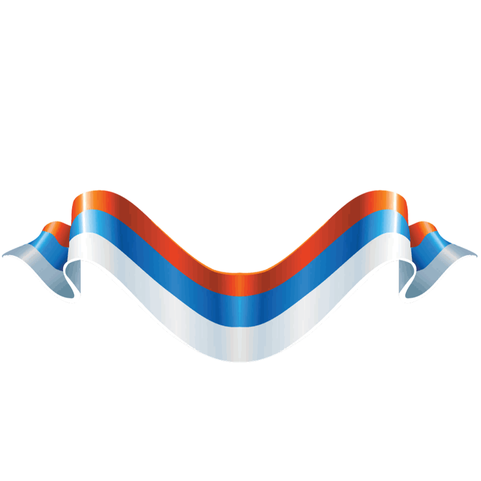
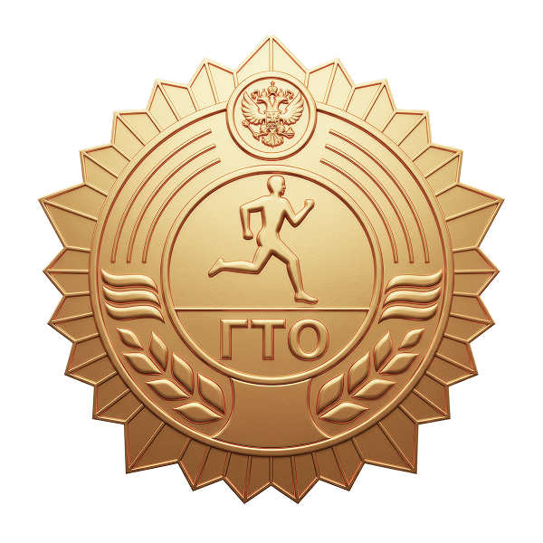

Петровское СП
Знак получен
12 августа · сдача норматива ГТО


Норматив «Подтягивания» сдан на площадке Петровского СП. Результат засчитан — знак закреплён за профилем.
Шеврон у профиля
Иван ПетровПетровское СП
ГТО · золото
Результаты
ПодтягиванияНорматив ГТО · 12 августа 2026
20 раз
Бег 100 мНорматив ГТО · 12 августа 2026
14,6 с